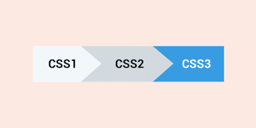

Présentation CSS

CSS (Cascading Style Sheets : feuilles de style en cascade) est un langage informatique qui sert à décrire la présentation des documents HTML et XML. Les standards définissant CSS sont publiés par le World Wide Web Consortium (W3C). Introduit au milieu des années 1990, CSS devient couramment utilisé dans la conception de sites web et bien pris en charge par les navigateurs web dans les années 2000.
- Les enjeux :
Séparer la structure d'un document de ses styles de présentation
Décliner les styles de présentation selon le récepteur
Permettre la cascade des styles
Histoire du CSS

- Le CSS (Cascading Style Sheets : feuilles de style en cascade) est un langage informatique qui permet la mise en forme d'une page web. Créé par la W3C dans les années 1990 , il est totalement pris en charge par les navigateurs dans les annés 2000. La première réelle proposition de feuilles de style est proposée par Hakon Wium Lie. Très vite, Dave Raggett qui est alors le principal éditeur du projet de spécification HTML3 publie un document évoquant le travail de Hakon Wium Lie. La première version du CSS ne permet pas une mise en page mais seulement une "mise en style" ( police,couleur, caractère...).
- En 1997, l'etude du CSS est confiée à une équipe du W3C presidé par Chris Lilley. Ce groupe contient des representants des plus grands navigateurs.
- C'est en mai 1998 que la seconde version du CSS, avec ses 70 nouvelles propriétés, apparaît. Des problèmes d'implémentation du CSS conduise le W3C à sortir en 2001 une version revue du CSS2. Le développement du CSS3 débute dès 1999. L'évolution du CSS est constante et il a fallu plus de 10 années pour finaliser sa version 3.

 Freecodecamp
Freecodecamp